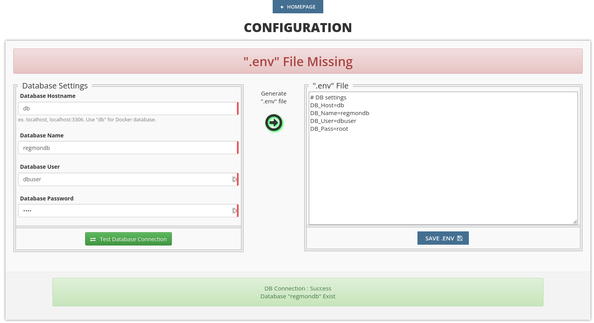

Installation Guide
Introduction
This guide is going to explain the installation routines of the regmon software. Please note that in order to go on with this guide several requirements must be met in the first place. This essentially includes additional, preinstalled software (database and web server application) and hardware (e.g. server nodes which are hosted in a data center). If you are planning to use regmon in production we assume you have knowledge on how to setup and configure the hardware. The process of hosting and configuring a server instance so it becomes accessible for the outside world is beyond of this guide’s scope. Instead, we focus only on the installation process of the whole software package which is required in order to run regmon. In case you don’t have a dedicated server running and setup and you just want to try out regmon on your own, you can still install the software on your local machine by following this guide.
Requirements
As already introduced the requirements are only in scope of required software components. Which additional software needs to be installed depends on your chosen installation routine. As we will see in section Installation Steps in more detail there are two different installation routines. In this section we will list the required software for each routine.
Container-Based
Docker Desktop
Bare Metal
Apache (2.4) or nginx or any other php-ready webserver
- PHP (8.2)
with extensions mbstring, zip, zlib, mysqli, pdo_mysql
MySQL (5.7)
- Additional PHP and JS libraries
Composer for installation of additional PHP libraries
npm for installation of additional JS libraries
Note that you don’t necessarily need the exact versions of the listed software packages. There’s a high chance that regmon will work with deviating versions (especially newer versions) but we cannot guarantee unless we haven’t tested out so far.
Installation Steps
There are two options for installing this project: using a Docker image (container-based installation) or installing it directly into your web server’s document root (bare metal installation). Choose your installation method depending on your specific requirements and preferences. In general we recommend opting for the container-based installation method, which only requires Docker Desktop to be installed on your web server. If you prefer to install on bare metal, please be mindful that discrepancies in the versions of installed software components may lead to potential issues.
Container-Based
Containers are isolated environments that run consistently across different systems. This makes it easy for us to ensure that regmon works reliable on your machine regardless of the operating system you use or the presence of any required software dependencies. Therefore we packaged our web application and its dependencies into a single, lightweight unit called a container which can be run on any system with a preinstalled containerization platform. For more information on containers we recommend the Docker overview page.
Prerequisites
In order to build and run containers on your system you will need a containerization platform to be installed. As we use Docker as our preferred platform, please download and install the latest version of Docker Desktop if you haven’t done already. You can install Docker on your own local machine if you just want to quickly test regmon on your own or install it on your server for production use.
Download Repository
For downloading the repository from github and copying it onto your system you have two options:
Using GIT
This step requires you to have GIT installed on your system. Open a terminal and change the directory to any place where you want regmon to be downloaded.
After that use the git clone command.
git clone https://github.com/madnetdev/regmon-os.git regmon
Then change the directory to the project root folder.
cd regmon
Using ZIP File
Go to https://github.com/madnetdev/regmon-os/ and click on the Code Button.
Then click Download ZIP.
Extract the zipped files to any place you want.
Change to the directory to the place you extracted the project and switch to the project root folder (which is the regmon folder)
Build And Run
In this step we build the container and run the process by the docker compose command.
docker compose -f "docker-compose-prod.yml" up -d --build
This command causes the container to be built in a way that it’s defined in the docker-compose-prod.yml file. The file mainly specifies every software dependency which is going to be needed by regmon. Note that the build process might need some time as dependencies are first going to be downloaded and then installed within it’s corresponding containers.
If you are a software developer you might want to use the docker-compose-dev.yml file instead of docker-compose-prod.yml in conjunction with the docker compose command.
The first file specifies further software dependencies and configurations which are useful for software development.
After the build process has finished you see regmon as a running process by using the ls command of docker compose:
docker compose ls
The result of this command should look similar to the output below. It is important that the status is running, otherwise something went wrong during the build phase.
NAME STATUS CONFIG FILES
regmon-os running(3) /home/user/projects/regmon/regmon-os/docker-compose-dev.yml
When the containers have been successfully built and are in running state, the regmon web app will be accessible via http://localhost:8000/. Keep in mind that this URL is only accessible if the container has been installed on your own local machine. If it has been installed on a remote server, you have to substitute localhost with your server’s domain or IP address.
Bare Metal
Configuration
Given that you have successfully installed regmon, you first need to configure the app. This only needs to be done after a fresh installation of the software. The process of configuration consists of three sequentially ordered parts which will be explained in the next subsections respectively.
Database
As we are following the container-based installation guide, a database with a pre-configured login has already been installed in a docker container.
In either case your browser should offer a website like this:
On the left side you have to fill in the hostname, the name and the login credentials of the database. As we are following the container-based installation guide, a database with a pre-configured login has already been installed in a docker container.
You can type in different credentials or settings for the database but note that these changes have to be done in the database software in advance. If you are unsure how to do this you can ignore this step and stick with the default settings, otherwise click on the green arrow to write the db settings into the regmon configuration (as displayed on the right side).
In either case you should click on Test Database Connection afterwards to test if the credentials are correct and a connection to the database can be established. The result should report a success message as displayed in the green box on the bottom. Continue with a click on the SAVE ENV button. From now on Regmon knows how to connect to the database.
As the database is empty we have to migrate some predefined data. For this prupose we have a sql file from which we can import the bare minimum data into our database which is required tu run the app. The last step .. image:: assets/img/regmon_empty_db.png
- alt:
Initial Database Configuration